Last Updated: 2026-04-11
You might have heard of OpenClaw. Yes, it is #1 open source project right now which helps everyone to have its own agent running on their local computer or VPS to do many things on users behalf. With claw, you technically can instruct your agent to do many things like checking your email, draft and send email to your friends, manage your calendar, create documents and even do coding.
In this codelab, you are going to create a simplified version of OpenClaw agent which can interact with your Google Calendar to manage your schedule, Google Spreadsheet to record your monthly expenses and many more. We will utilize Google ADK and its quite recent Skill supported features to build this as well as newer Google Workspace CLI. Due to time constraints, we are going to exclude agent interfaces like Whatsapp, Telegram, etc., and rely only on ADK Web UI.
In the Google Cloud Console, on the project selector page, select or create a Google Cloud project (see top left section of your console)
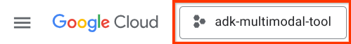
Click on it, and you will see list of all of your project like this example,
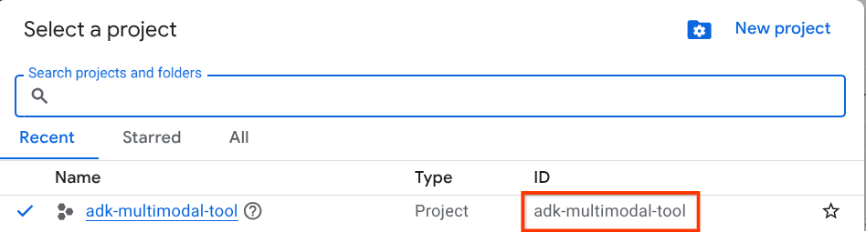
The value that is indicated by the red box is the PROJECT ID and this value will be used throughout the tutorial.
Make sure that billing is enabled for your Cloud project. To check this, click on the burger icon ☰ on your top left bar which shows the Navigation Menu and find the Billing menu
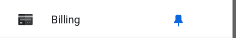
If you see the "Google Cloud Platform Trial Billing Account" under the Billing / Overview title ( top left section of your cloud console ), your project is ready to be utilized for this tutorial. If not, go back to the start of this tutorial and redeem the trial billing account
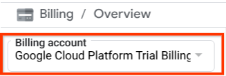
From your Google Cloud project, You'll use Cloud Shell for most part of the tutorials, Click Activate Cloud Shell at the top of the Google Cloud console. If it prompts you to authorize, click Authorize
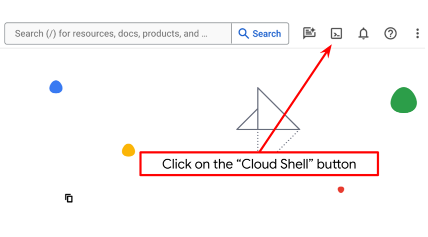
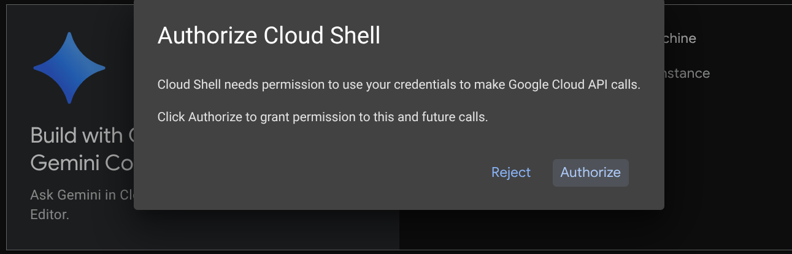
Once connected to Cloud Shell, we will need to check whether the shell ( or terminal ) is already authenticated with our account
To verify your account is connected, run:
gcloud auth list
gcloud config listIf you see your personal gmail like below example output, all is good
Credentialed Accounts
ACTIVE: *
ACCOUNT: imre.nagi2812@gmail.com
To set the active account, run:
$ gcloud config set account `ACCOUNT`If not, try refreshing your browser and ensure you click the Authorize when prompted ( it might be interrupted due to connection issue )
Next, we will setup google cloud project we will be using:
gcloud config set project <YOUR_PROJECT_ID>Now, we will need to enable the required APIs via the command shown below. This could take a while.
gcloud services enable aiplatform.googleapis.comOn successful execution of the command, you should see a message similar to the one shown below:
Operation "operations/..." finished successfully.
The template agent structure is already provided for you inside part2_starter_agent directory on the cloned repository. Now, we will need to rename it first to be ready for this tutorialNext, we will set up Google Workspace CLI that will be used by the agent to interact with our Google Calendar, Docs and Spreadsheet.
Google recently released Google Workspace CLI — one command-line tool for Drive, Gmail, Calendar, Sheets, Docs, Chat, Admin, and more. Since AI Agent is smart enough now to execute CLI commands using bash tools, we will utilize this CLI installed in our local computer. However, setting this up is not that trivial.
Go to gws CLI prerequisite and installation section to install gws CLI.
We will setup gws CLI for the first time.
gws auth setupIf your gcloud CLI is set up correctly, you should see the Authentication step. Choose the email which you are using for this workshop.
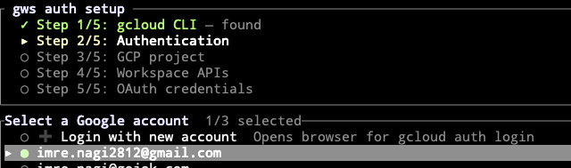
Next, choose your Google Cloud project where you redeemed the workshop credits.
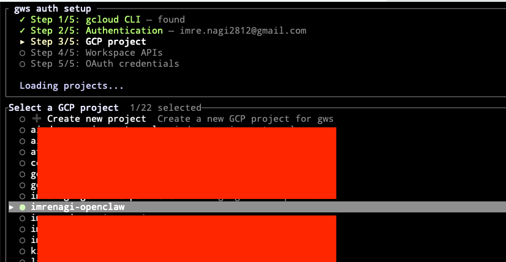
Next, enable the Google APIs that we will use. For this workshop, you must enable at least the following:
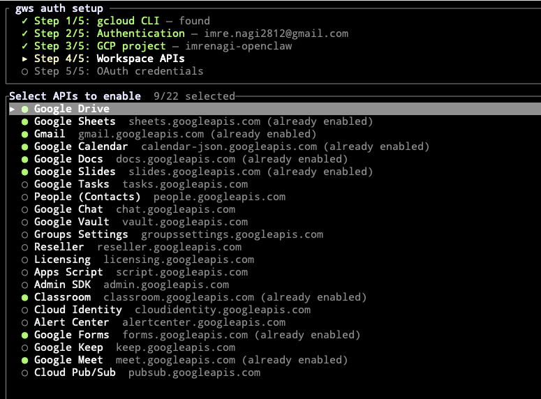
Follow the instructions on the gws setup wizard to generate OAuth credentials.
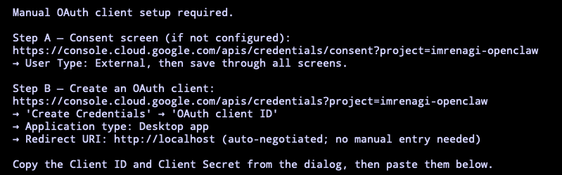
Once it is generated, copy it to the setup wizard.
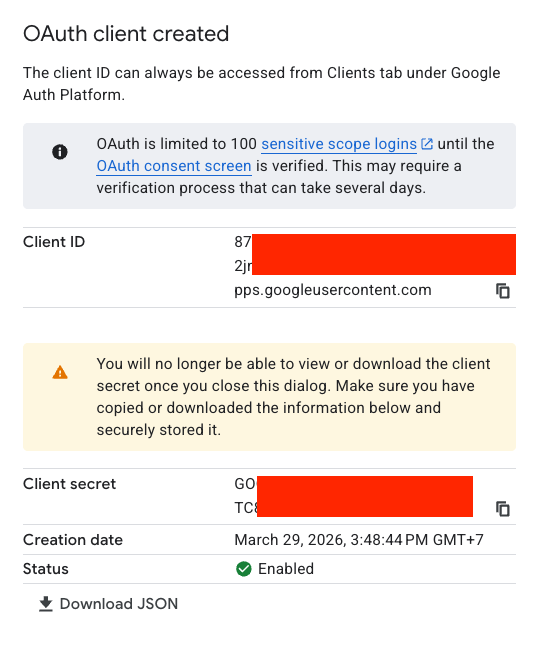
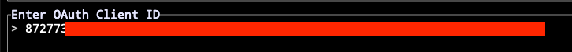
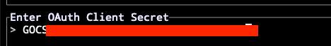
Next, you need to sign in the gws CLI with your Google Account.
gws auth loginYou will be presenting with OAuth scopes you will be using for login. Type a to clear up all options. Then enable the following options:
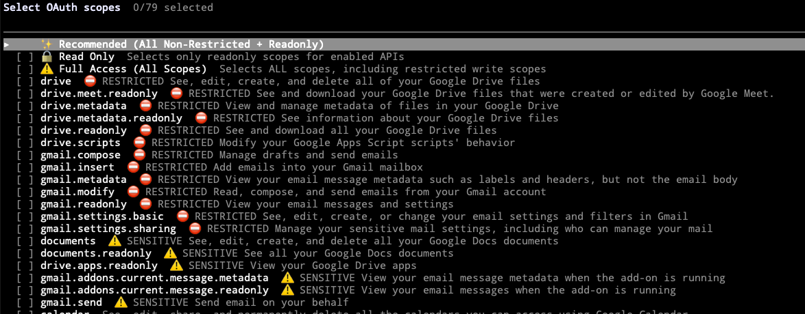
Pressed Enter, and you should be prompted with a URL for login.
Open this URL in your browser to authenticate:
https://accounts.google.com/o/o.........2se68vr.apps.googleusercontent.com&prompt=select_account+consent
Once you are logged in, you will probably see an error page.
http://localhost:42315/?iss=https://accounts.google.c...http://localhost:42315/?iss=https://accounts.google.com&code=4/0Aci98E8ljKvsviN33evKquawQO2Mxpjb35.......gleapis.com/auth/cloud-platform%20https://www.googleapis.com/auth/calendar%20https://www.googleapis.com/auth/gmail.modify&authuser=0&prompt=consent
curl -X GET ‘<your url>' Now test your gws CLI installation. Run the following command:
gws drive files list --params '{"pageSize": 5}'
If you see the CLI returns response, then you have completed the gws setup properly.
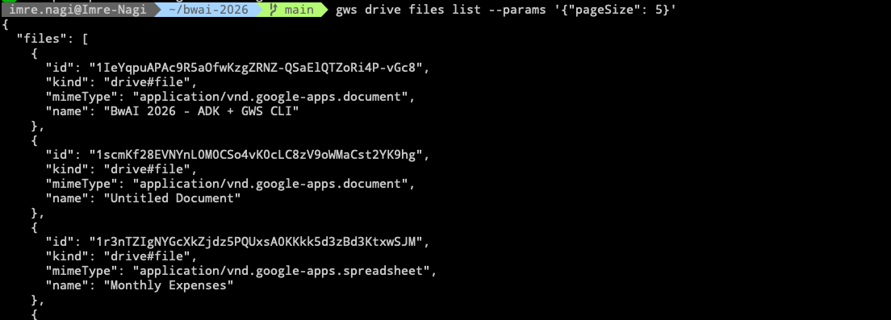
Go to aistudio.google.com.
Then go to Get API Key on the bottom left of the menu.
Click Create API Key on the top right of the screen.
Set the name of your key and choose the google project where you redeemed the token. Keep the key once it is generated. We will use it on the following steps.
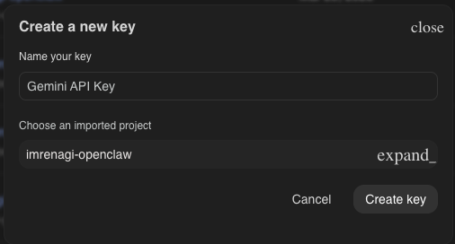
Clone the starter project for this workshop.
git clone -b bwai-2026 --single-branch https://github.com/imrenagi/simplified-claw-adk.git && cd simplified-claw-adkRun this command to install the required dependencies to the virtual environment on the .venv directory.
uv sync --frozenCheck the pyproject.toml to see the declared dependencies for this tutorial which are google-adk.
After that, copy the my_assistant/.env.example to my_assistant/.env
cp my_assistant/.env.example my_assistant/.envMake sure to update your GOOGLE_API_KEY with the value you generate from Google AI Studio.
GOOGLE_API_KEY=<set your api key>We will start by adding the root_agent. This agent is basically the main agent user will connect first when they start sending the message. For now we will just give general instruction for the agent.
Copy the following snippet to my_assistant/agent.py
from google.adk.agents.llm_agent import Agent
root_agent = Agent(
model='gemini-3-flash-preview',
name='root_agent',
description="A comprehensive assistant capable of managing Google Workspace (Calendar, Docs, Sheets), local files, and executing system commands via bash.",
instruction=(
"You are a highly capable assistant that can perform a wide range of tasks across Google Workspace, the local file system, and terminal environments. "
),
)
Once you have added this, run the agent:
uv run adk web --port 8000 --host 0.0.0.0 --allow_origins "*"To access your application, click Web Preview and Change port to 8000
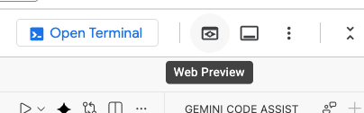
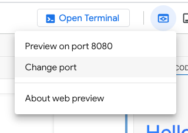
Please wait a moment until connection is established. Once you see Google ADK page, try to say "hi" to your agent.
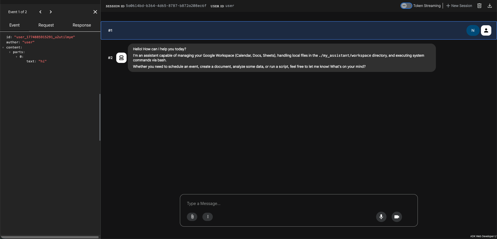
If everything runs well this far, you should be ready to start the actual workshop!
Creating an AI agent which can do many things is very simple. If it is running on your computer, the only thing it needs is only the ability to execute bash/shell commands in your terminal. However, as you might know, LLM by default has no ability to execute bash/shell commands. It can tell you what command to run, but it will need a function call or tool to execute the command.
For more about function calls, you can read Function Calling with Gemini API.
Let's implement step by step to create the bash tool.
In my_assistant/tools directory, create a new python file named bash_tools.py.
Copy the following file content to that file.
import subprocess
def bash(command: str) -> str:
"""Executes a bash command and returns the standard output and error.
Args:
command: The bash command to execute.
"""
try:
result = subprocess.run(
command,
shell=True,
capture_output=True,
text=True,
check=True
)
return f"Output:\n{result.stdout}\nErrors:\n{result.stderr}"
except subprocess.CalledProcessError as e:
return f"Execution failed with exit code {e.returncode}.\nOutput:\n{e.stdout}\nErrors:\n{e.stderr}"
except Exception as e:
return f"An error occurred: {str(e)}"
The bash function above is a standard Python function definition. However, the description provided on the function body plays a very important role to help your AI agent to know when it should use this tool and what should be the argument to this function call.
When we have the function definition for the tool ready, we should add this tool to the root_agent so that it can utilize this when it needs it.
Now, update the agent.py with the following content:
from google.adk.agents.llm_agent import Agent
from my_assistant.tools.bash_tool import bash
root_agent = Agent(
model='gemini-3-flash-preview',
name='root_agent',
description="A comprehensive assistant capable of managing Google Workspace (Calendar, Docs, Sheets), local files, and executing system commands via bash.",
instruction=(
"You are a highly capable assistant that can perform a wide range of tasks across Google Workspace, the local file system, and terminal environments. "
"Use 'bash' for other terminal/system tasks."
),
tools=[
bash,
],
)
What has changed here?
bash tool to the agent.pyinstruction so that it knows that it has a bash tool for accessing terminal.tools and add bash function to the array.By doing so, when you are asking the AI agent to perform a task which can be solved by running bash command, it will do it directly on your terminal.
Now to update your agent, stop the old one and rerun the command:
uv run adk web --port 8000 --host 0.0.0.0 --allow_origins "*"Go to http://localhost:8000 and try to ask "Can you please check what my ip address is?"
If it is working as expected you should see bash tool is executed and your IP address is returned.
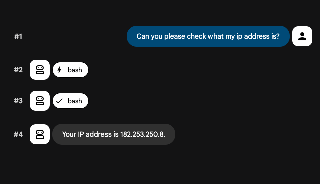
To see more detail on what command is executed, click the bash button on the UI. On the left menu bar, you should see something similar to this following image.
Note that the curl ifconfig.me command is used by bash to check your ip address.
Agents are increasingly capable, but often don't have the context they need to do real work reliably. Skills solve this by giving agents access to procedural knowledge and company-, team-, and user-specific context they can load on demand. Agents with access to a set of skills can extend their capabilities based on the task they're working on. You can read more about SKILL.
In this workshop, we will be adding Google Workspace capabilities by using recent experimental SKILL features in Google ADK.
You should have installed gws CLI on your computer at this point. Now, If you look at the project, you should see my_assistant/skills directory where all of the skills are located. You may see a lot of skills directory there. But, these are the one we will be using:
These skills above will help us perform authentication, accessing calendar, creating and updating Google docs and Google sheets.
In my_assistant/tools directory, create a new python file named gws_tools.py.
import pathlib
from google.adk.skills import load_skill_from_dir
from google.adk.tools import skill_toolset
# Define the skills directory, relative to this tool script.
# We go one level up to get to the my_assistant/ folder, then into /skills.
SKILLS_DIR = pathlib.Path(__file__).parent.parent / "skills"
def get_my_skill_toolset() -> skill_toolset.SkillToolset:
"""Loads all Workspace skills into a single consolidated toolset."""
# Define all unique skills to load
# Proactively including all relevant Workspace skills
workspace_skills = [
# Base shared functions
load_skill_from_dir(SKILLS_DIR / "gws-shared"),
# Calendar
load_skill_from_dir(SKILLS_DIR / "gws-calendar"),
load_skill_from_dir(SKILLS_DIR / "gws-calendar-agenda"),
load_skill_from_dir(SKILLS_DIR / "gws-calendar-insert"),
# Docs
load_skill_from_dir(SKILLS_DIR / "gws-docs"),
load_skill_from_dir(SKILLS_DIR / "gws-docs-write"),
# Sheets
load_skill_from_dir(SKILLS_DIR / "gws-sheets"),
load_skill_from_dir(SKILLS_DIR / "gws-sheets-append"),
load_skill_from_dir(SKILLS_DIR / "gws-sheets-read"),
]
return skill_toolset.SkillToolset(
skills=workspace_skills
)
In the code above, we create skill_toolset.SkillToolset which contains all skills that we want to add from our internal project. If you are familiar with agent skills, it is similar to putting your skills in the .agents/skills directory. However, this is one of few ways defined by ADK so that your agent can load skills to your agent.
Now, update the agent.py with the following content:
from google.adk.agents.llm_agent import Agent
from my_assistant.tools.bash_tool import bash
from my_assistant.tools.gws_tool import get_my_skill_toolset
# Initialize the toolsets
my_skill_toolset = get_my_skill_toolset()
root_agent = Agent(
model='gemini-3-flash-preview',
name='root_agent',
description="A comprehensive assistant capable of managing Google Workspace (Calendar, Docs, Sheets), local files, and executing system commands via bash.",
instruction=(
"You are a highly capable assistant that can perform a wide range of tasks across Google Workspace, the local file system, and terminal environments. "
"Use 'bash' for other terminal/system tasks."
"Use 'my_skill_toolset' for all Google Workspace related tasks including Calendar, Docs, and Sheets. "
),
tools=[
my_skill_toolset,
bash,
],
)Now to update your agent, stop the old one and rerun the command:
uv run adk web --port 8000 --host 0.0.0.0 --allow_origins "*"Go to http://localhost:8000 and try to ask "Can you list upcoming events in my calendar?"
If it works, you should see something similar to this:
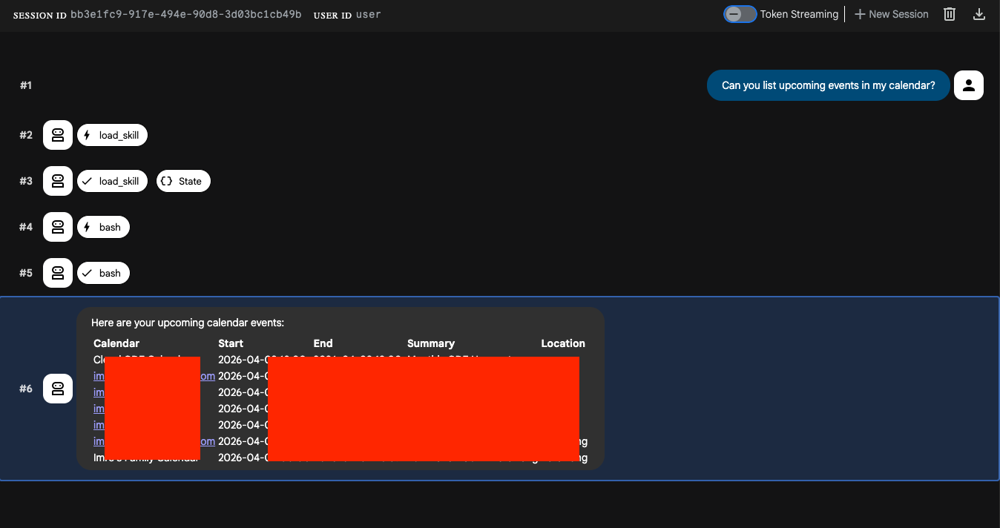
When scrolling through instagram, sometimes you probably have seen ads where some random people are selling excel templates for tracking your expenses, right?
Don't you think that should be easy now?
Your tasks:
Congratulations, you've successfully built your agent whose access to your calendar, sheets or even email.!
At least now, creating your agent is not as scary as it sounds, right?